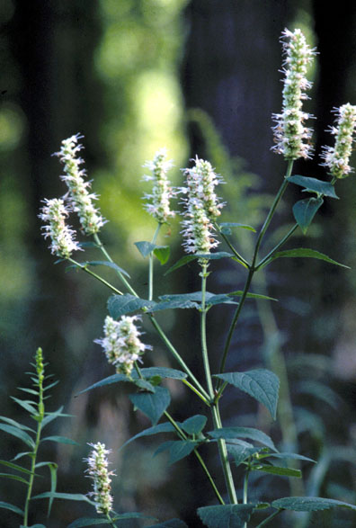
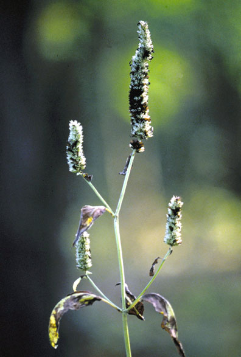
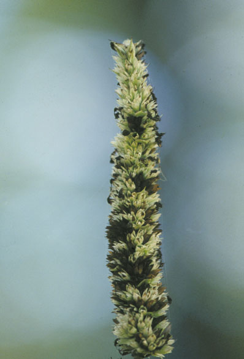

Agastache Nepetoides
Family: Lamiaceae
Yellow Giant Hyssop
Swink/Wilhelm #5


Click to view larger photo
FLOWERING: Mid-July to early October.
SEED TIMING: Late September to late October.
HABITAT: Woodland edges and savannas.
DIAGNOSTIC FEATURES: Up to 8 feet high. Plant is smooth, square-stemmed, with thin, coarse, dark green, toothed leaves and crowded spikes of pale yellow, mint-like blossoms.
TO PICK: Look down from above to the inside of each dried brown calyx on spike. Ripe seed is very dark in color and shakes out easily.